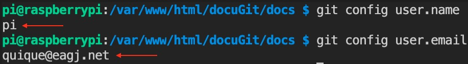
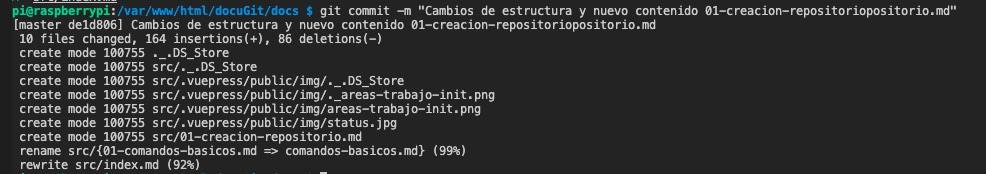
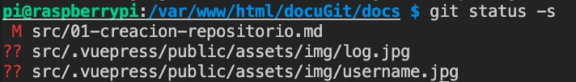
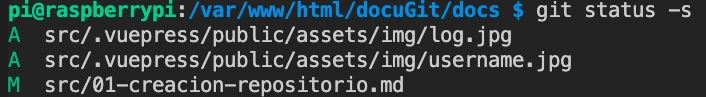
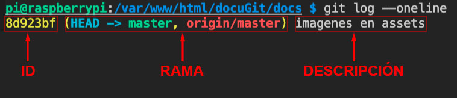
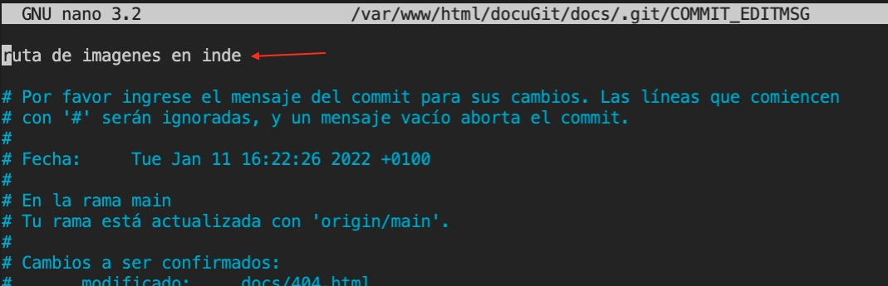

# Creación de repositorios y comandos básicos
# Loguearse
La primera vez que usamos git en una maquina hemos de loguearnos poniendo un nombre y un email. El logueo es simplemente un proceso para ver quien es el que ha hecho cambios. No hay que crear una cuenta previamente, simplemente usar estos dos comandos para poner nuestro nombre y nuestro email. Este proceso hay que hacerlo en cada ordenador que trabajemos.
Para saber si estamos logueados podemos usar los comandos:
git config user.nameygit config user.email

Si recibimos datos es que ya estamos logueados, en caso contrario tendremos que usar los comandos de logueo:
git config --global user.name "nombrededeusuario"
Decimos cual es nuestro nombre de usuario en esta maquina.
git config --global user.email "emaildedeusuario"
Decimos cual es nuestro nombre de usuario en esta maquina.
# Inicilizar repositorio
El primer paso para la creación de un repositiorio git es inicializarlo mediante el comando:
git init
Esto creará una carpeta oculta llamada .git en la cual se guardará toda la información del proyecto. Este comando solo se ejecutará una vez en nuestro proyecto, ya que una vez usado ya habrá creado esa carpeta .git y no habrá que volver a usarlo en ese ordenador para ese proyecto.
Este comando creará dos areas en nuestro proyecto, una de estas areas es la llamada Staging area o area de ensayo y el otro area es el repository local. Aunque todo esto se hará de manera transparente a nosotros, ya que nosotros seguiremos trabajando en nuestro directorio de trabajo (working directory).
El staging area es el area donde hacemos un seguimiento de los archivos hayamos seleccionado (add). Este area del repository local o staging area es el lugar donde se han mandado todos los cambios (commit).
En resumidas cuentas nosotros trabajamos en nuestro working directory y cuando hacemos cambios podemos pasar esos archivos a nuestro staging area y una vez hechas todas las modificaciones pasar todos esos cambios a nuestro repository local el cual creará un punto de versión al que podremos acceder en cualquier momento para revisarlo.

# Añadir archivos
Mientras trabajamos en nuestra carpeta local y una vez que hemos modificado, borrado, o creado archivos tenemos que decirle a git que pase esos archivos al staging area y eso se consigue con:
git add <nombre_archivo>
Una vez ejecutado este comando, git hace un seguimiento de este archivo (y no de los que no se hayan añadido) ya que se encuentra en el staging area. Todo este proceso lo hace de manera transparente a nosotros, ya que nosotros seguimos viendo nuestra carpeta local, pero internamente ese archivo, al estar en el staging area, estará continuamente siendo revisado en cada cambio que hagamos.
Si por otro lado hemos modificado/creado/borrado muchos archivos, en vez de ir haciendo add de cada uno, podemos pasar todos al staging area con:
git add .
# Enviar a repositorio
una vez tengamos todos nuestros archivos en nuestra stagging area, podemos pasarlos a nuestro repositorio local y crear un punto de respaldo.
Para pasar nuestra staging area a nuestro repository local hemos de usar:
git commit -m "nombre descriptivo de la subida"

De este modo hemos creamos una instantanea o punto de respaldo de nuestro trabajo hasta ese momento y nuestro staging area quedará vacio ya que todo se ha pasado al repositorio local. De este modo acabamos de crear un punto de respaldo, al que podremos acceder más adelante mediante un ID que se le ha asignado. Cada commit no machaca el anterior, simplemente crea nuevos puntos cada uno con su propio ID.
# Comprobar estado
Según vamos trabajando y creando archivos llegará un punto en el que no sabremos que archivos tenemos en nuestro staging area y para eso hemos de usar el comando:
git status -s

De este modo veremos que archivos hemos modificado (M), borrado (D) o sin seguimiento (??).
En el momento que añadimos todo al staging area (git add .) veremos como los flags han cambiado y nos avisa de que ya estan añadidos.

En este pantallazo vemos como se han añadido (A), modificados (M).
# Log de commits
Cada vez que hacemos un commit, este se guarda como un punto de creación dentro del repository local, el comando para ver todos los commit es:
git log --oneline
De este modo veremos un listado de todas nuestras copias en la cual veremos el id, la ramificación y la descripión del commit. 
# Volver a un commit anterior
Si por alguna razón deseamos volver a un punto de respaldo anterior podemos usar el comando reset. Dependiendo del flag que usemos este será mas "soft" o más "hard".
En cualquiera de los dos casos hemos de usar la opción reset:
git reset --mixed IDogit reset --hard ID
La diferencia entre uno y otro es que --mixed (o no poner nada, ya que es la opción por defecto) nos vuelve a un punto anterior, pero nos mantiene todos los archivos que tengamos en nuestro working directory, pero sin seguimiento. Es decir borraría los commit posteriores pero nos mantendría (sin seguimiento) los archivos que tengamos en nuestro proyecto.
La opción --hard nos dejaría nuestro proyecto como estaba en ese momento, es decir si en ese commit teniamos 3 archivos y antes de hacer el reset teniamos 1003, perderiamos esos 1000.
IMPORTANTE: USAR GIT RESET BORRA TODOS LOS COMMITS POSTERIORES QUE SE HAYAN HECHO DESPUES DEL QUE HEMOS VUELTO
# Rehacer commit reset
Existe un comando para volver hacia adelante cuando hemos hecho un reset y es mediante el comando:
git reflog
Obviamente, usar con cuidado el reset --hard, aunque podamos volver a un commit posterior... Puede dar problemas. Por ejemplo si creamos un repositorio en github y lo asociamos a nuestro proyecto. Una vez sincronizados hacemos un reset a un estado anterior al hacer una subida a github (push) nos dará un conflicto y no nos dejará hacerlo ya que al haber vuelto a un punto anterior y haber hecho cambios, el repositorio en github está en una versión más adelantada.
Una manera de "fusionar" github con nuestro repositorio es mendiante:
git pull origin main
Esto hará un merge de los dos contenidos mezclando todo.
# Borrar commit
Podemos borrar un commit anterior mediante el comando revert. Esto lo que hará es restaurar los archivos que había en ese commit y crear uno nuevo al final con ese cambio, pero no borra el commit al que hemos hecho revert:
git revert idcommit
Si hacemos un git log --oneline veremos que se ha hecho un nuevo commit de ese revert y mantiene el commit del punto del que hemos hecho revert. Es decir nos deja el proyecto como estaba en ese momento, hace un commit nuevo y no borra el commit al que hemos hecho revert, cosa que si haría el comando reset el cual si borra el punto de ese commit.
# Cambiar nombre a commit
puede que por error hayamos puesto mal la descripción del commit y querramos cambiarla. Esto se puede hacer siempre que no se haya hecho un push al repositorio
git commit --amend
Nos abrirá nuestro editor de código por defecto (vim, nano, etc) Con el nombre que le habiamos dado, solo es cambiar ese texto de la descrioción. 